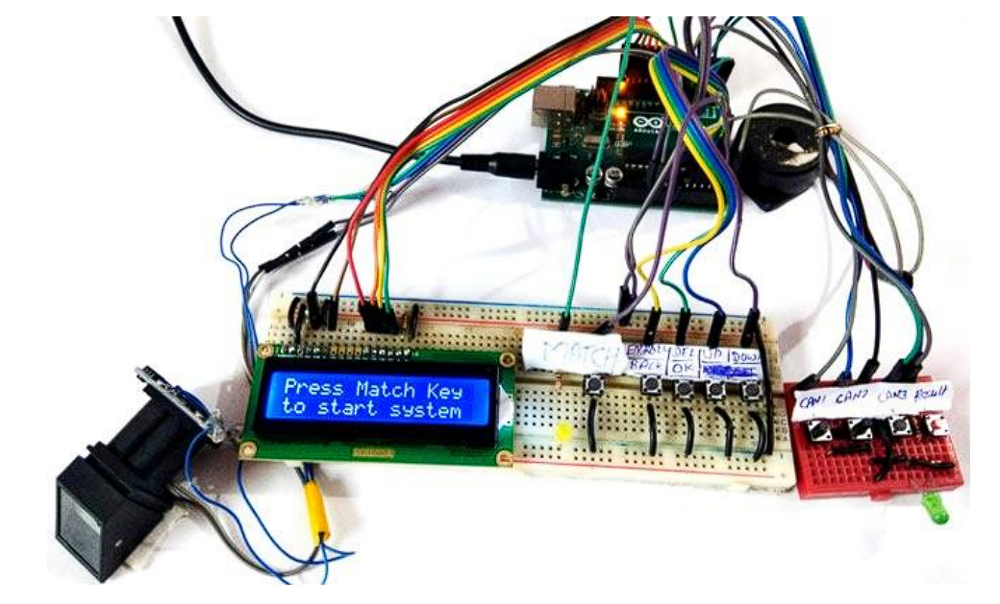

📌 Fingerprint-Based Voting System
Project Type: Embedded System (Arduino-Based)
Project Duration: 4 Months
Team Size: 2 Members
🔹 Project Overview
The Fingerprint-Based Voting System is an electronic voting machine that uses biometric authentication to ensure secure and fraud-free elections. Instead of using traditional voter ID cards, this system authenticates voters through fingerprint verification. If a voter’s fingerprint matches the pre-registered database, they are allowed to cast their vote.
🔹 How It Works
- The system stores the fingerprints of registered voters in a database.
- On election day, a voter places their finger on the fingerprint sensor.
- The system scans the fingerprint and matches it with the stored database.
- If a match is found, the voter is allowed to select a candidate and cast their vote.
- The system ensures that each voter can vote only once.
- Votes are recorded and displayed on an LCD screen.
🔹 Key Features
- ✔ Biometric Authentication: Uses a fingerprint scanner for voter verification.
- ✔ Fraud Prevention: Prevents multiple voting by the same person.
- ✔ User-Friendly Interface: LCD display guides users through the process.
- ✔ Efficient & Secure: Eliminates the need for manual verification and paperwork.
🔹 Technologies Used
- 🔹 Microcontroller: Arduino Nano
- 🔹 Biometric Sensor: DY50 Fingerprint Sensor
- 🔹 Display Module: 16x2 LCD Screen
- 🔹 Programming Languages: C (for Arduino)
- 🔹 Hardware Components: Push buttons, LEDs, EEPROM Memory
🔹 Challenges Faced
- ⚡ Fingerprint Recognition Accuracy: Optimizing the sensor to detect prints correctly even in different lighting conditions.
- ⚡ Preventing Duplicate Votes: Implementing a mechanism to ensure each fingerprint could only be used once.
- ⚡ Hardware Interfacing: Integrating the Arduino board with the fingerprint module and LCD display.
- ⚡ Data Storage: Managing fingerprint records efficiently in EEPROM memory.
🔹 Project Outcome
The Fingerprint-Based Voting System successfully provided a secure and efficient way of conducting elections. It ensured that only registered voters could vote and eliminated fraudulent practices.
🔹 Project Images & Code
Here are some snapshots of my project:

View the complete code on my GitHub Repository.